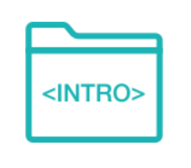
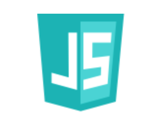
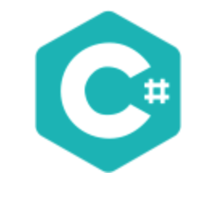

Curious what you should codus?
Take our quiz to find out!
What would you rather create?
Where would you rather work?
What would you be the most proud to have built?
What is your greatest flaw?
What do you want in life?
Congratulations!
Your result is:
Intro to Programming
This course is for absolute beginners to learn the fundamentals of programming. After completing this course, you'll be able to build basic webpages and understand programming fundamentals. No coding experience is required, but computer proficiency is necessary.
CSS

The CSS (Cascading Style Sheets) course builds on the fundamentals from Intro to Programming. It teaches students how to style web pages using complex, responsive layouts, all the while exposing them to the latest CSS tools, tricks, and features used every day by front-end developers and designers.
Javascript
This course builds on the programming fundamentals from Introduction to Programming and gives students more difficult problems to solve and a more advanced set of tools to solve them with. It also introduces students to the front-end MVC paradigm that powers many real-world web applications. Since JavaScript is the only programming language understood by all web browsers, it's become one of the most popular languages and necessary for most web and mobile developers to know.
Design
After establishing solid programming fundamentals in CSS and JavaScript, this course introduces students to the vast world of Design. At Epicodus we know that tools change, but principles don't. This course focuses on maintaining a strong balance between theory and practice. Students will not only cultivate a solid foundation of basic design principles, but will also gain experience using modern, industry-standard tools such as Sketch and InVision.
Internship
As part of Epicodus, local companies host students as full-time interns. It's a chance for students to learn about how development works in the real world, and a chance for companies to work with talented developers in the making.
Intro to Programming
This course is for absolute beginners to learn the fundamentals of programming. After completing this course, you'll be able to build basic webpages and understand programming fundamentals. No coding experience is required, but computer proficiency is necessary.
Java
This course builds on the programming fundamentals from Introduction to Programming and gives students more difficult problems to solve, a more advanced set of tools to solve them with, and establishes the foundations for learning the real-world technologies used by programmers on the job. Java is one of the most widely-used programming languages, and is used in everything from Android apps to large enterprise development. Portland companies using Java who have hired Epicodus graduates include Nike and Thetus.
Javascript
This course builds on the programming fundamentals from Introduction to Programming and gives students more difficult problems to solve and a more advanced set of tools to solve them with. It also introduces students to the front-end MVC paradigm that powers many real-world web applications. Since JavaScript is the only programming language understood by all web browsers, it's become one of the most popular languages and necessary for most web and mobile developers to know.
Android
After establishing solid programming fundamentals in Java and JavaScript, this course introduces students to the Android framework used to develop mobile apps. Android development is used in everything from phones to tablets to watches, and companies hiring Android developers range from small startups to giant enterprises.
Internship
As part of Epicodus, local companies host students as full-time interns. It's a chance for students to learn about how development works in the real world, and a chance for companies to work with talented developers in the making.
Intro to Programming
This course is for absolute beginners to learn the fundamentals of programming. After completing this course, you'll be able to build basic webpages and understand programming fundamentals. No coding experience is required, but computer proficiency is necessary.
PhP
This course builds on the programming fundamentals from Introduction to Programming and gives students more difficult problems to solve, a more advanced set of tools to solve them with, and establishes the foundations for learning the real-world technologies used by programmers on the job. PHP and Drupal are typically used to build content-focused websites. Portland companies using PHP and Drupal who have hired Epicodus graduates include Intel, Metal Toad, and OpenSesame.
Javascript
This course builds on the programming fundamentals from Introduction to Programming and gives students more difficult problems to solve and a more advanced set of tools to solve them with. It also introduces students to the front-end MVC paradigm that powers many real-world web applications. Since JavaScript is the only programming language understood by all web browsers, it's become one of the most popular languages and necessary for most web and mobile developers to know.
Drupal
After establishing solid programming fundamentals in PHP and JavaScript, this course introduces students to the Drupal framework used by websites like WhiteHouse.gov and Sony.com.
Internship
As part of Epicodus, local companies host students as full-time interns. It's a chance for students to learn about how development works in the real world, and a chance for companies to work with talented developers in the making.
Intro to Programming
This course is for absolute beginners to learn the fundamentals of programming. After completing this course, you'll be able to build basic webpages and understand programming fundamentals. No coding experience is required, but computer proficiency is necessary.
C#
This course builds on the programming fundamentals from Introduction to Programming and gives students more difficult problems to solve, a more advanced set of tools to solve them with, and establishes the foundations for learning the real-world technologies used by programmers on the job. C# and .NET are typically used by larger enterprises, government agencies, and companies serving enterprise and government clients. Portland companies using C# and .NET who have hired Epicodus graduates include Windsor and Incomm.
Javascript
This course builds on the programming fundamentals from Introduction to Programming and gives students more difficult problems to solve and a more advanced set of tools to solve them with. It also introduces students to the front-end MVC paradigm that powers many real-world web applications. Since JavaScript is the only programming language understood by all web browsers, it's become one of the most popular languages and necessary for most web and mobile developers to know.
.NET
After establishing solid programming fundamentals in C# and JavaScript, this course introduces students to the .NET framework used by many large enterprise organizations.
Internship
As part of Epicodus, local companies host students as full-time interns. It's a chance for students to learn about how development works in the real world, and a chance for companies to work with talented developers in the making.
Intro to Programming
This course is for absolute beginners to learn the fundamentals of programming. After completing this course, you'll be able to build basic webpages and understand programming fundamentals. No coding experience is required, but computer proficiency is necessary.
Ruby
This course builds on the programming fundamentals from Introduction to Programming and gives students more difficult problems to solve, a more advanced set of tools to solve them with, and establishes the foundations for learning the real-world technologies used by programmers on the job. Ruby and Rails are typically used by younger companies and startups, especially for building interactive web applications. Portland companies using Ruby and Rails who have hired Epicodus graduates include New Relic, LivingSocial, and SpendWell.
Javascript
This course builds on the programming fundamentals from Introduction to Programming and gives students more difficult problems to solve and a more advanced set of tools to solve them with. It also introduces students to the front-end MVC paradigm that powers many real-world web applications. Since JavaScript is the only programming language understood by all web browsers, it's become one of the most popular languages and necessary for most web and mobile developers to know.
Rails
After establishing solid programming fundamentals in Ruby and JavaScript, this course introduces students to the Rails framework used to build interactive web applications.
Internship
As part of Epicodus, local companies host students as full-time interns. It's a chance for students to learn about how development works in the real world, and a chance for companies to work with talented developers in the making.